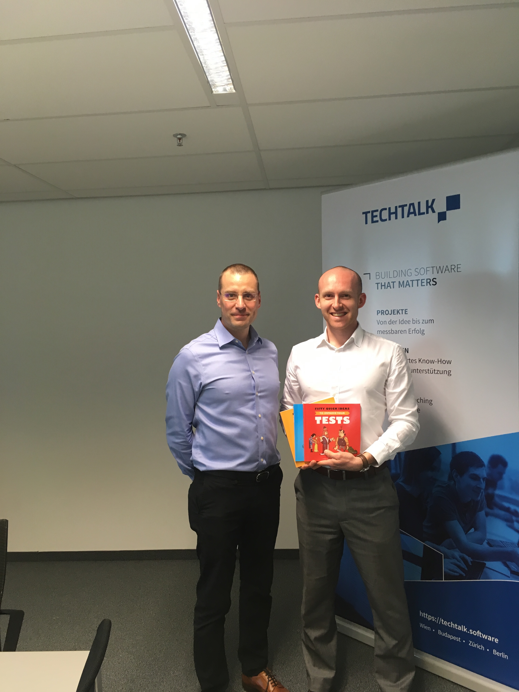

For more than two years I have been working on a project where the goals of our team are:
- Designing an API layer to open a group of financial organizations to the world
- Creating an innovative, easy-to-use online solution that will help customers to improve their financial lives
- Setting up a platform for 3rd-party plugins
At my project beginnings, the team worked like this:
- Product owner outlined a requirement
- Business analyst wrote a set of stories elaborating this requirement (usually in a form of unstructured narrative)
- Developers took the stories and tried to implement them
- Testers had a look at the development output, tried to test it manually, using rather a gut feeling than a having a clear set of acceptance criteria
- The FE functionality got deployed to a UAT
- Feedback arrived: lots of bugs, a clash of the reality and the expectations
The scenarios have helped a lot to everyone involved:
- BA has to think about the expected requirement behaviour in a more complete way
- Product owner (PO) can check the scenarios and have a handshake with the BA before the development starts
- Developers have an idea of what is expected from them, where to start, where to finish and how to know they have done what is expected
- Developers use the BDD (Given-when-then) scenarios for writing unit tests
- Testers have at least a rough idea what they should (manually) test
- Anyone who opens a requirement specification can get an overview quickly
A huge improvement since the times of the stream-of-consciousness kind of specification. Yet we still face these issues:
- Our documentation for the frontend (FE) code is manually written (therefore incomplete, outdated)
- The test coverage of the FE code is insufficient and not reliable
- The manually written documentation is not in any automatic/interactive relationship with the FE code
- Team members lack knowledge about the FE solution
- Lots of misunderstanding during the development as well as bugs during the acceptance stage
There were seven of us and instead of long introductions, Gojko suggested an activity for which he:
- Asked us to split into two groups
- Gave us a list of of Black-Jack card game rules
- Told us he represents a non-technical business owner to answer our questions
- Asked us to come up with a paper-based implementation of the game. We could create a set of scenarios, draw a diagram, draw pictures or anything we wanted. Afterwards one of us would be a machine that will be tested by the client, and this machine would have to operate strictly by following our paper-based implementation
- He time-boxed the activity for 15 minutes
After the additional 5 minutes Gojko:
- Gave us a set of acceptance tests
- Asked one of us to be a tester, one of us to be the Black-Jack casino machine, one of us to be an observer which makes sure the machine follows strictly the paper-based implementation we have done
- Time-boxed the activity for 10 minutes
Lessons learned:
- We started working immediately before thinking more about the requirements -> Before you start working, even if there is time pressure, take 10% of the time to question the requirements.
- We did not ask for the acceptance criteria -> Ask the business who is going to accept the solution and what the acceptance criteria are. What should fail/pass?
- We took the business requirements as correct and given -> Don’t fall into the trap that business stakeholders know what they want. Usually they don’t and it is not their mistake. The role of a BA is to find out and clarify the real and relevant requirements of the business. This should be done by triggerring a conversation to discover questions nobody had asked before.
- We felt like there was not enough time -> Don’t say there is not enough time to do something – say instead that within the given time you can deliver only a limited scope.
After we finished this 20+10 minutes long activity, and tested our implementation with the acceptance criteria (examples of expected behaviour), we started to find out questions and unclarities. It also turned out that not even all members of our team understood the original requirements in the same way. Unfortunately, the unclarities became visible only after the implementation – sadly, this is what usually happens in everyday life.
Important to say that the acceptance criteria given to us by business turned out to be wrong, even contradictory. But this did not matter – they helped us to have a conversation and discover problems.
As Gojko pointed out afterwards, the real problems stem from things which are clear – because they are “clear” to different people in different ways. Things which are unclear, on the other hand, are good, because they instantly make us aware there are still questions to be answered.
This activity taught us that if a team discusses examples of expected behaviour during the specification process then the team can even in very short time find out lots of unclear spots. All this before the real implementation starts.
An important input for such a specification-by-example session are some acceptance criteria – if not prepared by business, then by the BA based on the goals of the business.
As Gojko mentioned, feedback often comes after the implementation (too late) when people get something they can complain about. So instead of asking business for final requirements, the business should be given something to complain about in advance, before the development starts.
The “something” to complain about can be a list of acceptance tests (Given-when-then scenarios) based on what the team learnt during the specification-by-examples session. Alternatively it can be a table, a picture, a behaviour model. Suitability depends on the character of the requirements.
Having done the specification-by-example session the BA will afterwards find out answers to the newly-emerged questions and will provide business stakeholders with the scenarios/acceptance tests/etc. At this point the business stakeholders will be able to give feedback (complain).
Only after the questions get answered and and feedback gets provided by the business, a more mature requirements can be written down. This is the point where the BA should specify the solution based on the new findings. A set of given-when-then scenarios, a picture, diagram, a table with examples – all will work well depending on the context.
Specification-by-example discussions can literally save weeks of development, because it reduces misunderstanding, bugs, necessity for improvements as well as any clashes between what gets delivered and what was expected. In addition to this, specification by example makes the whole team involved and supports knowledge sharing.
Facing resistance:
- The team thinks they do not have time for such a new approach. Developers are busy typing the code, testers clicking around etc. -> Do not offer a tool by saying that you are going to do specification by example. Point out the reasons why everyone is busy because of trying to understand requirements and because of fixing everything that has gone wrong. Then suggest an experiment where a whole team participates in discussing the requirements. Time-box the experiment to 30 minutes. Say that if that does not work, the team loses 30 minutes once a week. If it works, everyone benefits from it and fewer bugs and better solution will make everyone less busy/stressed/overloaded in the end.
- The business owners say they do not have time to have a meeting with you to discuss question and some additional examples: -> Ask the business owners how important the project is to them. They will most likely say that very important. Then tell them that if the project is very important, why they think it is not worth spending a few more moments to better understand and nail down the requirements.
Where to go from here?
- The most important benefit of specification by example is to have better understanding of the product to be developed, where this understanding has been reached through a discussion involving all team members.
- Once this is done, the given-when-then scenarios specifying the solution can be used as an input for automated testing. Tools for turning the scenarios into automated tests are for example Cucumber or FitNess.
- It is vital to make a decision what needs to be tested automatically and what manually. Automation on its own does not solve anything.
- Automation be applied to things which are correct, otherwise we will only get into troubles faster.
- Automated tests should be version-controlled to get easily matched with the version we want to test.
- Cucumber scenarios can be further (automatically) exported into HTML, PDF or Confluence (using Green Pepper plugin), so that they become more accessible to wider audience.
- As Gojko points out, people often think there is no documentation in the agile delivery approach. This is not true. There is documentation, but it is more bound to the code. By this it is always up to date. In the agile approach the acceptance tests (criteria) equal the specification and equal the documentation. To quote the author: “Living documentation is a reliable and authoritative source of information on system functionality, which anyone can easily access.”
The last word
The workshop with Gojko Adzic literally exceeded all my expectation. Similarly to business owners, before the workshop I was not even fully aware what to ask for and what should be delivered. Gojko is highly professional and enthusiastic in his approached. Rather then just sharing theories he manages to teach by experience. During the two-day workshop I experienced how things usually go wrong and managed to find out and learn how to work better. Highly recommended.
